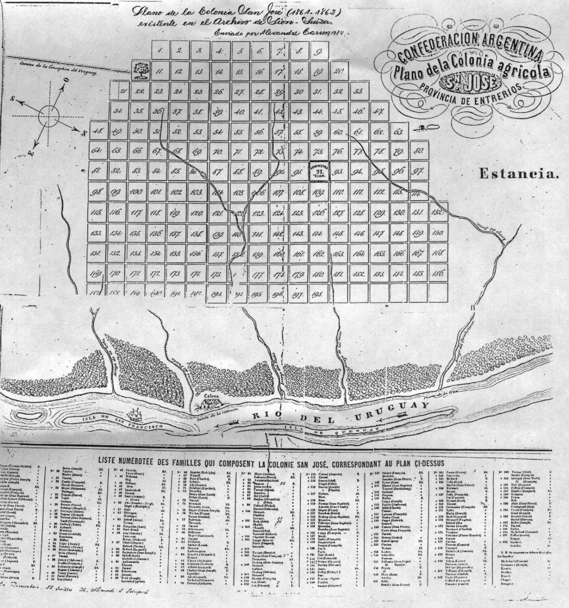
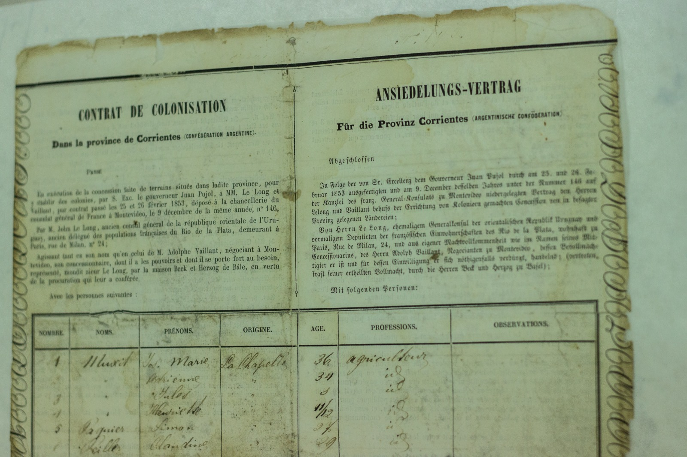
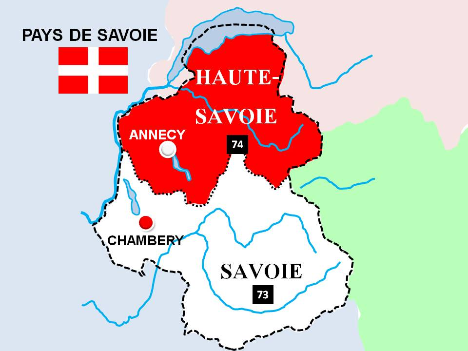

Origenes de la Colonia San José
La colonia San José surge como resultado de corrientes inmigratorias que se producen a mediados del siglo XIX.
Las guerras, los matrimonios con gran número de hijos, la falta de trabajo, la estrechez de los valles alpinos y el deseo de prosperar, hizo que algunas personas decidieran abandonar sus tierras en busca de un futuro mejor.
Argentina, luego de la sanción de la Constitución de 1853, abría sus puertas a quienes quisieran venir a habitar estas vastas extensiones absolutamente despobladas.
Mientras tanto en Suiza, la casa contratista de Beck y Herzog ofrecía enormes posibilidades de progreso a quienes se embarcaran en su empresa.
El primer contingente de saboyanos1 venia destinado a la provincia de Corrientes, pero problemas políticos del gobernador Pujol hizo que éste rescindiera el contrato con el representante de la casa contratista, Jean Le Long, quien inmediatamente contactó con don Justo José de Urquiza, presidente de la Confederación Argentina. Urquiza, deseoso de fomentar la agricultura en Entre Ríos, les brindó inmediato apoyo y les ofreció tierras al sur de la provincia, en Ibicuy. Pero estas tierras eran inundables por lo que una colonia no tenía posibilidades de prosperar. Por tal razón, el agrimensor francés Carlos Tomás Sourigues2, originario de Bayona se dedicó a buscar otros terrenos más adecuados y los encontró donde estaba la calera del rincón Espiro entre el arroyo de La Leche y el del Medio. El traslado del contingente desde Ibicuy hasta el asentamiento definitivo se produjo el 28 de junio y el 1 de julio de 1857 arribaron a tierra firme en la goleta Rey David. No obstante se fija como día de fundación el 2 de julio.
Sourigues delimitó los terrenos, lo cual llevó su tiempo porque todo estaba por hacerse, pero a medida que fueron tomando posesión de esas tierras comenzaron a levantar precarias construcciones que luego mejorarían con el tiempo. Esas parcelas estaban alejadas de la costa del rio Uruguay, dado que el terreno es allí muy pedregoso. La colonia crecerá hacia el oeste y en el centro del trazado se dejó un gran espacio para ubicar más adelante la iglesia, la escuela y demás edificios públicos. Ese centro que fuera denominado La Plaza por los inmigrantes, es hoy ciudad de San José.

Se tuvo especial atención de ubicar a los recién llegados según su origen e idioma: al noreste los franceses, al suroeste los suizos y al noroeste los piamonteses
Los colonos firmaron con el General Urquiza un contrato impreso en francés y en español, cuyo objetivo era su permanencia definitiva y con un elemento movilizador: la actividad agropecuaria. A cada familia se le concedieron 27 hectáreas y los elementos necesarios para labrar y subsistir en los primeros tiempos. Tuvieron un plazo de 4 años para saldar sus deudas, luego de lo cual se transformaron en propietarios. Se les permitió también formar una Comisión de 5 miembros para hacer las observaciones y en caso de necesidad, dirigirse a una autoridad mayor. Esa autoridad mayor fue el Dr. Alexis Peyret, abogado de profesión quien fuera el primer administrador que tuvo la incipiente colonia.

Poco a poco la colonia San José empezó a prosperar y, por necesidad, para poder sacar la producción, se construyó un puerto. Este puerto daría origen, posteriormente a la Villa Colón, lo que sucede el 12 de abril de 1863.
La organización de la colonia San José resultó tan exitosa que se transformó prácticamente en el modelo de colonización y subdivisión de la tierra de todo el departamento Colón, que vio nacer no solo a la Villa Colón, sino también a Villa Elisa, Colonia Hughes, Colonia San Anselmo, Colonia Hambis, entre muchas otras.
¿De dónde vienen nuestros ancestros?
Alta Saboya y Saboya son dos departamentos franceses que pertenecen a una de las trece regiones que, junto con los territorios de Ultramar, conforman la República Francesa : la región Auvergne-Rhône-Alpes. Su capital y ciudad más poblada es Lyon.
Están situados en el centro de Europa, al occidente de la cadena alpina y contienen sus cumbres más elevadas. Annecy y Chambéry son respectivamente sus capitales.- 
Saboya y Alta Saboya fueron durante mucho tiempo una nación independiente y desde 1860 fueron anexadas al territorio francés.
La montaña más alta de los Alpes, Mt. Blanc, se encuentra en la Alta Saboya, al igual que los populares centros turísticos de Chamonix, Courchevel, Megève y St Gervais, entre otros. La ciudad olímpica de Albertville, la antigua capital real de Chambéry y la Abadía de Hautecombe se encuentran en el departamento mucho más agrícola de Saboya, que produce excelentes vinos blancos.
Ambos departamentos son bien conocidas por sus estaciones de esquí, pero también por sus hermosos lagos (Lac du Bourget, Lac d'Annecy, Lac d'Aiguebelette), que atraen a un gran número de veraneantes.
La ciudad de Annecy, con sus hermosos canales, "Vieille Ville" (Ciudad Vieja) y su castillo en lo alto de una colina, está considerada como una de las ciudades más bellas de Europa; alberga un festival internacional de películas de animación (cada dos años, en mayo), así como un gran espectáculo de fuegos artificiales (La Fête du Lac), en agosto. Además, el casco antiguo de la ciudad está repleto de restaurantes que preparan la reconocida cocina de la región. Es un destino muy popular para los turistas de todo el mundo.
Fotos de annecy y chambery